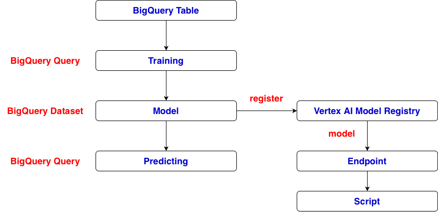
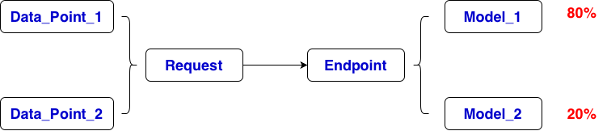

CREATE OR REPLACE MODEL `project_id.dataset_name.model_name`
OPTIONS(
model_type='linear_reg',
input_label_cols=['median_house_value'],
data_split_method='AUTO_SPLIT'
) AS
SELECT
longitude,
latitude,
housing_median_age,
total_rooms,
total_bedrooms,
population,
households,
median_income,
ocean_proximity,
median_house_value
FROM `project_id.dataset_name.table_name`
WHERE median_house_value IS NOT NULL;
SELECT *
FROM ML.EVALUATE(
MODEL `project_id.dataset_name.model_name`
);
SELECT
predicted_median_house_value,
median_income,
total_rooms
FROM ML.PREDICT(
MODEL `project_id.dataset_name.model_name`,
(
SELECT *
FROM `project_id.dataset_name.table_name`
LIMIT 10
)
);
# deploy model
from google.cloud import aiplatform
PROJECT_ID = "project-e434985f-6be4-4a4f-92d"
LOCATION = "us-central1"
# Vertex AI registered model ID
MODEL_ID = "housing_model"
aiplatform.init(
project=PROJECT_ID,
location=LOCATION
)
# Get the registered model
model = aiplatform.Model(
model_name=f"projects/{PROJECT_ID}/locations/{LOCATION}/models/{MODEL_ID}"
)
# Create an endpoint
endpoint = aiplatform.Endpoint.create(
display_name="house-price-endpoint"
)
# Deploy the model
model.deploy(
endpoint=endpoint,
machine_type="e2-highcpu-2",
min_replica_count=1,
max_replica_count=1
)

# conduct prediction
instance = {
"longitude": -122.23,
"latitude": 37.88,
"housing_median_age": 41,
"total_rooms": 880,
"total_bedrooms": 129,
"population": 322,
"households": 126,
"median_income": 8.3252,
"ocean_proximity": "NEAR BAY"
}
response = endpoint.predict(
instances=[instance]
)
print(response.predictions)
# List registered models
from google.cloud import aiplatform
aiplatform.init(
project="project-e434985f-6be4-4a4f-92d",
location="us-central1"
)
models = aiplatform.Model.list()
for model in models:
print("Display name:", model.display_name)
print("Resource name:", model.resource_name)
print()
# List created endpoints
endpoints = aiplatform.Endpoint.list()
for endpoint in endpoints:
print(f"\nEndpoint: {endpoint.display_name}")
print(f"ID: {endpoint.name}")
for deployed_model in endpoint.list_models():
print(" Deployed model:", deployed_model.display_name)
print(" Deployed model ID:", deployed_model.id)
# list deployed on a specific endpoint
deployed_models = endpoint.list_models()
print('Deployed ', len(deployed_models), ' models ...')
for model in deployed_models:
print(f" Model display name: {model.display_name}")
print(f" Deployed model ID: {model.id}")
print(f" Registry model resource: {model.model}")